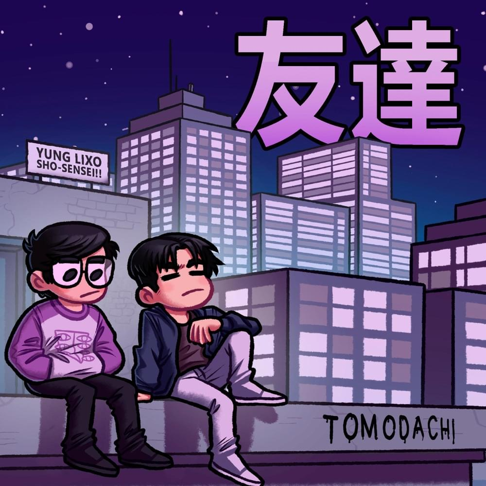

I REMEMBER
BBNO$
Lyrics - Letra
You broke my heart
One too many times before, fore
I remember times on the dance floor
I remember times when you'd go!
Now I'm happy alone
She stole my heart
I can't believe I fell for her tricks
I can't believe I passed on her life
I can't believe that times were like oh, oh, oh so good
No one to tell how
No one to hurt me now
I thought we said our vows
I miss your disavow
Said my feelings you got the best of me
Motive was lust, you played me basically
She told me I'm quite a masochist
Oh, I know
I can't believe it still hurts to kiss
So I won't
How could you say you wanted this
I sure don't
How could you ever say you'd rather be alone!
I'll be honest
I'm so glad that I'm on my own
Glad I'm modest
Finally, gave time to my self
Now I'm breaking out of my shell
I told myself I need nobody else
I was surprised on how the cards were dealt
I wasn't ever sure of how you felt
But I knew for certain I would take you back any time of day
Thank you to the adolescent me for my attitude
I'd never tell you ever what to be, I ain't mad at you
'Cause roses are red and violets are blue, I'm missing you
You stay in my head, not sure what to do I'm leaving you

PROXIMA MÚSICA:
